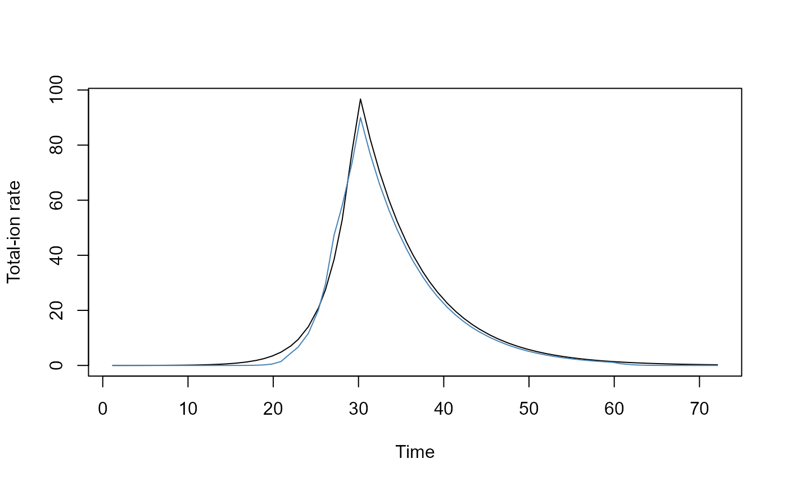

Fit a log-concave rate profile to an ordered multichannel signal
Source:R/fitLogConcaveProfile.R
fitLogConcaveProfile.RdEstimates a single nonnegative profile given a fixed spectrum and the contribution of the background and other components. With scan exposure \(e_t\), profile \(h_t\) and spectrum \(s_j\), the fitted mean is \(O_{tj} + e_t h_t s_j\). Pass a local window to restrict its support.
Usage
fitLogConcaveProfile(
y,
spectrum,
offset = 0,
family = poisson("identity"),
time = NULL,
exposure = 1,
weights = 1,
start = NULL,
dispersion = NULL,
theta = NULL,
censor = NULL,
maxit = 4L,
ncores = 1L
)Arguments
- y
Numeric matrix of observations, with ordered scans in rows and channels in columns, or a vector for one channel. Supply integer counts for Poisson and negative binomial, and encode censored Gamma values as zero.
- spectrum
Known nonnegative channel loadings in column order. A spectrum summing to one gives a profile in total-ion rate units.
- offset
Known nonnegative contribution from other components and background, in observation units. A scalar, scan vector or matrix like y.
- family
Identity-link noise model accepted by [logconNMF()].
- time
Strictly increasing scan coordinates, optionally irregular. Defaults to the row numbers.
- exposure
Positive scan exposures, scalar or one per row.
- weights
Nonnegative observation weights, scalar, scan vector or matrix like y. Zero weights omit observations from the profile update.
- start
Optional nonnegative initial rate profile. A second start is obtained from the data conditional on the supplied offset.
- dispersion
Fixed dispersion, or the scale for fixed-scale Gamma. Defaults to the parameter in the family object, otherwise one. For NB1, one gives the Poisson limit. Estimate noise from the larger sample with [estimateSignalNoise()] when appropriate.
- theta
Fixed positive size for NB2, supplied here or in the family object. The profile fit conditions on the noise parameters.
- censor
Detection limit for exact zeros in either Gamma model. Defaults to the family object's limit or 0.5. Zero allows strictly positive, uncensored Gamma measurements.
- maxit
Maximum scoring iterations per starting profile.
- ncores
Thread budget for sufficiently large native scan updates.
Value
A numeric vector of rates in input scan order. Multiply by exposure for per-scan totals when the supplied spectrum sums to one.
Details
The positive support is contiguous and the slopes of the log rate are nonincreasing in time. Weighted projection onto this cone supplies proposals for a line search against the original observation likelihood (scaled Poisson criterion for quasi-Poisson). Exact zeros in Gamma fits contribute a left-censoring probability. This is a local optimization. For multiple components [logconNMF()] alternates profile, spectrum and background updates and applies its joint rank criterion.
Examples
set.seed(42)
time <- cumsum(runif(70, 0.8, 1.2))
exposure <- rep(c(0.8, 1.2), 35)
spectrum <- c(0.6, 0.3, 0.1)
rate <- 100 * exp(-abs(time - 30) / ifelse(time < 30, 3, 7))
mu <- 4 + (exposure * rate) %o% spectrum
y <- matrix(rpois(length(mu), mu), nrow(mu))
h <- fitLogConcaveProfile(y, spectrum, offset = 4, time = time, exposure = exposure)
plot(time, rate, type = "l", xlab = "Time", ylab = "Total-ion rate")
lines(time, h, col = "steelblue")
